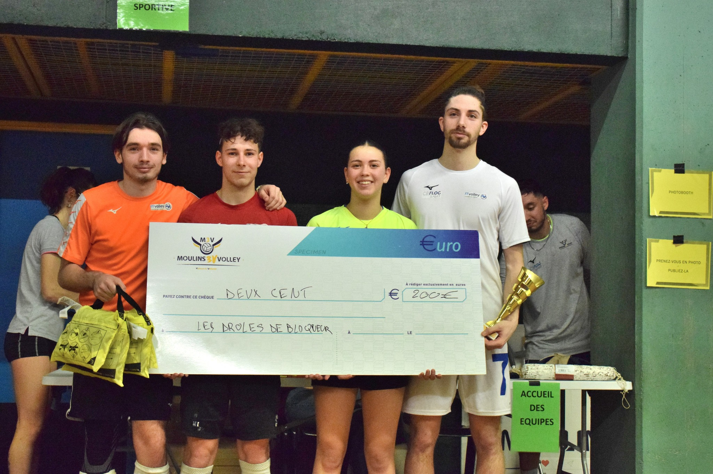
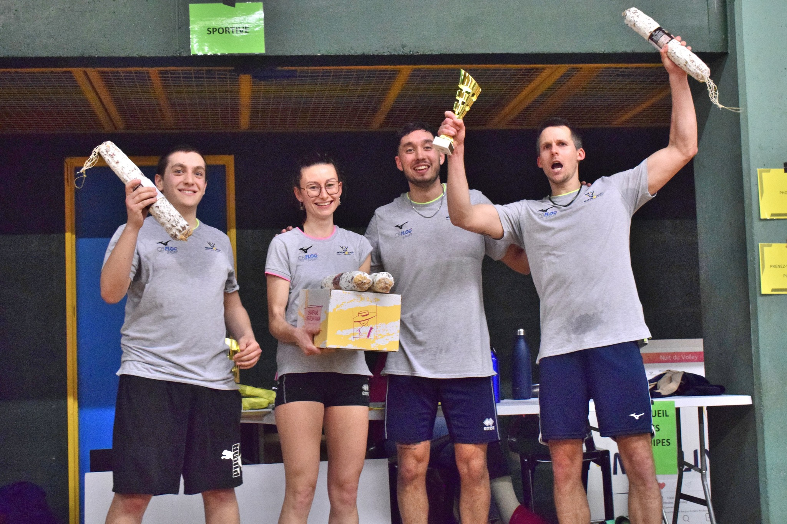
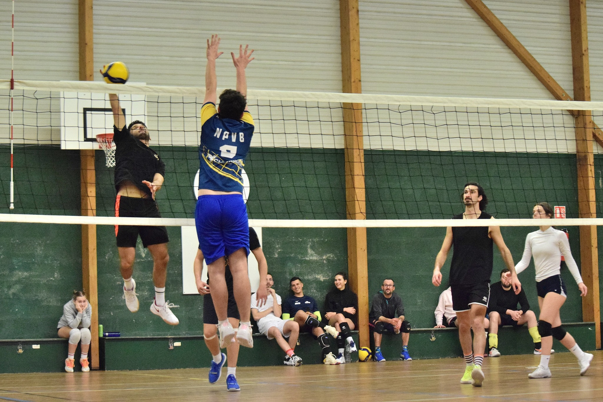
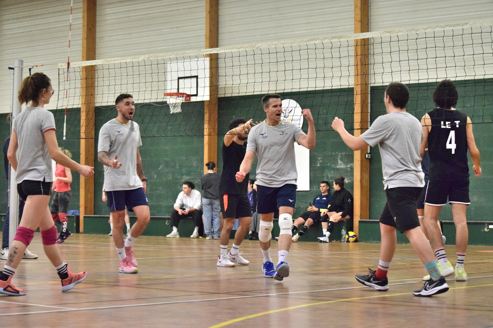
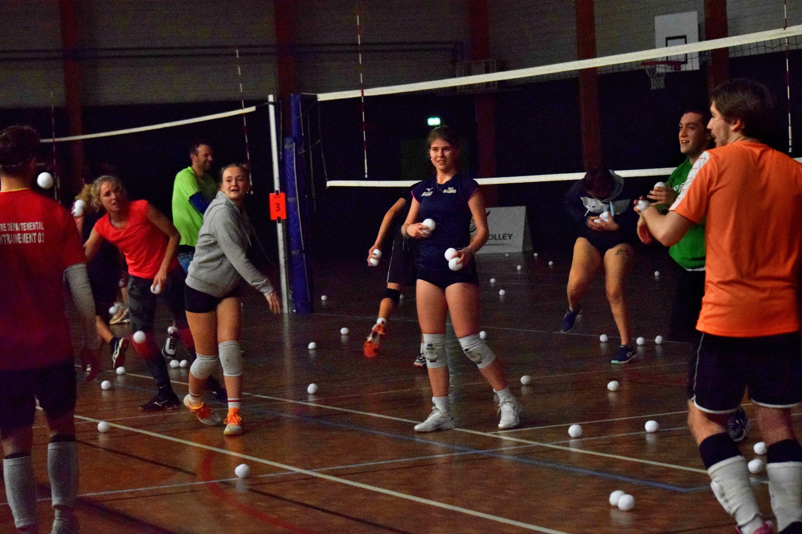
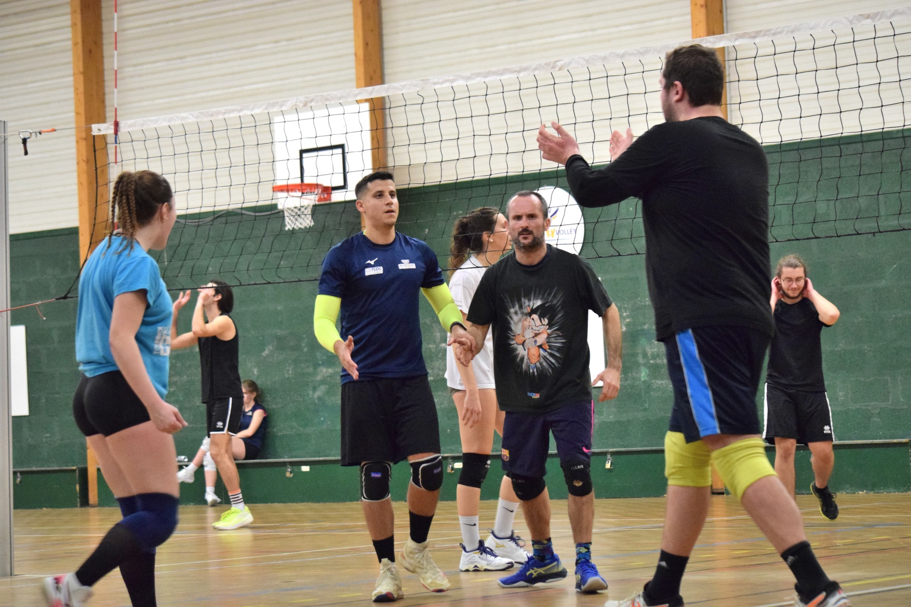

La nuit du volley
À Moulins, le vendredi 16 février.

Retour en images sur les résultats du tournoi organisé par le club
Ce vendredi 16 février a eu lieu la nuit du volley, un tournoi organisé par le club de Moulins, à l'aide de ses bénévoles. Première édition, ce tournoi est un véritable succès. Musique, buvette et boules de neige, le tournoi s'est déroulé dans une bonne ambiance.
Au total, 12 équipes inscrites, le maximum prévu pour cette édition. Le niveau était au rendez-vous ! Félicitations aux vainqueurs de cette première édition, Lucas, Lucille, Mathis et Gabriel, et merci à tous les participants et bénévoles, qui ont permis de rendre ce tournoi un succès !
Quelques images du tournoi





